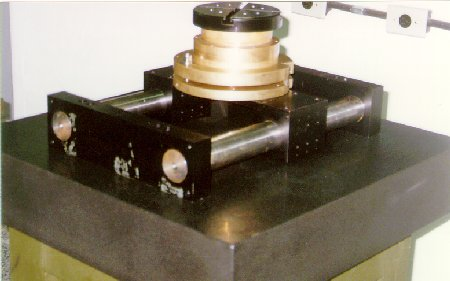
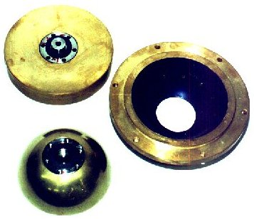
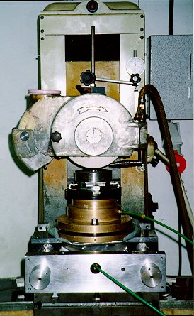

LMP>Linhas de Pesquisa>SISMEC>Mesa de Retificação Aerostática
OBJETIVOSDevido à dificuldade encontrada no LMP para fabricar mancais aerostáticos, objetivou-se desenvolver uma mesa de retificação aerostática para a usinagem de sapatas planas circulares para estes mancais. Esta mesa de retificação deve possuir a melhor qualidade possível nos seus movimentos para permitir que as sapatas usinadas possuam qualidade superficial e geométrica adequadas à aplicação das sapatas. PROCEDIMENTOSAtravés do acompanhamento de uma metodologia de projeto, foi desenvolvido o projeto da mesa de retificação seguindo as seguintes etapas: projeto conceitual, projeto preliminar e projeto detalhado. Terminado o projeto da mesa de retificação, alcançou-se uma concepção considerada ideal para a mesma, de acordo com as suas especificações de projeto definidas no início do processo. A concepção final da mesa de retificação consiste
em um mancal rotativo aerostático montado sobre guias cilíndricas
aerostáticas e um sistema de inclinação da mesa para
permitir a usinagem das sapatas planas com conicidade controlada.  O mancal aerostático utilizado na mesa possui uma
configuração esférico-plana, com alimentação
de 12 restritores em cada face. A pressão de alimentação
de ar é de 6 bar, e a folga de montagem do mancal é de 10 mm
em cada interface.  RESULTADOSCom o objetivo de qualificar a mesa de retificação, foram
realizados ensaios estáticos, dinâmicos e de retificação.
Os ensaios dinâmicos comprovaram a segurança de operação
da mesa.  |
| Contato: SISMEC Walter Lindolfo Weingaertner Prof. Dr.-Ing |
Última Atualização 21.06.2006 |